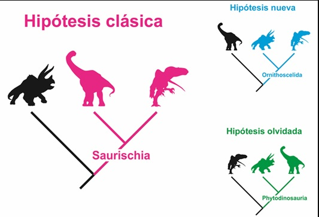
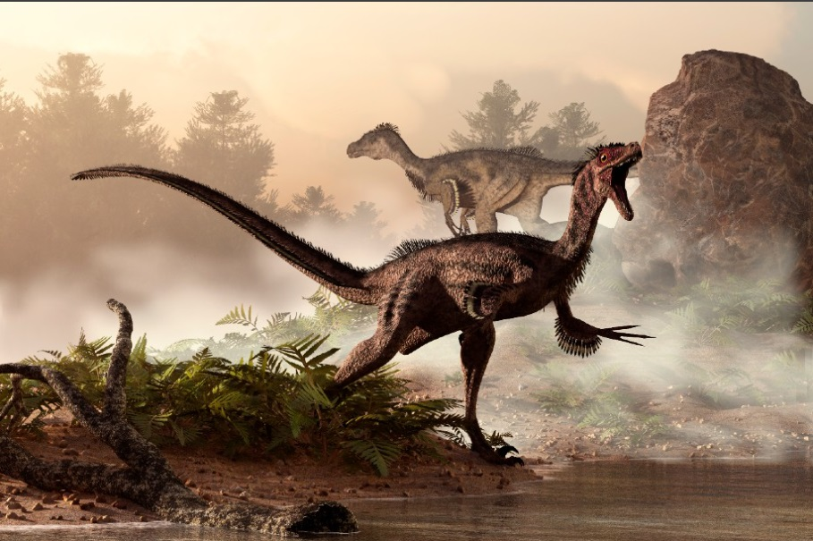
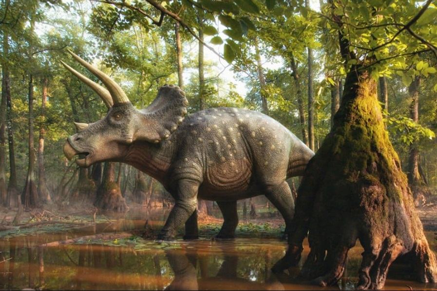

Los dinosaurios
Tipos de dinosaurios que existierón:
Saurischia.
Ornithischia.

Dentro de los Saurischia se encuentran:
Theropoda:
Carnívoros bípedos como el Veloriraptor.
Sauropodomorpha:
Herbívoros de cuello largo como el Diplodocus.

De los Ornithischia son:
Ornithopoda:
Hervívoros bípedos como el Iguanodon.
Thyreophora:
Dinosaurios acorazados como el Stegosaurus.
Marginocephalia:
Dinosaurios con cuernos y crestas como el Triceratops.
